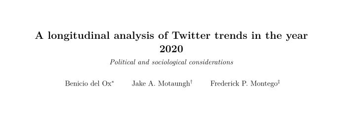
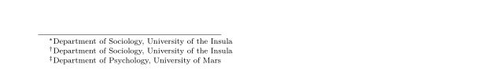

“Why don’t you try RMarkdown?” and moving to Bookdown
A while ago I started to work on a manuscript, and during a meeting with the co-authors one of them said “Why don’t you try RMarkdown to write this project?”. Until that moment, I had only used Word to write scientific documents, and a quick look on the Internet confirmed my initial suspicion that using RMarkdown was a complete different experience than using Word. Nonetheless, I also had a feeling that learning to do things in RMarkdown had to be beneficial, so I decided that it was worth to give it a shot. If I didn’t like how things were going after a week, I would go back to Word.
Fast forward a couple days later and I’m starting to understand how things work on RMarkdown, and I also realize that I need to cross-reference an equation in the manuscript. A Google search indicates that to do this, I should probably use Bookdown. A quick glimpse on the Bookdown manual also indicates that Bookdown offers more capabilities than RMarkdown to reference equations and figures. So I start working on Bookdown. As I work on the manuscript more and more, I find that using Bookdown is substantially more beneficial to write a document than Word. Equations? Easy, and unlike the equations made in Word, here they look gorgeous, textbook-like. Citations? A small learning curve, but you understand what you are doing and control the amount of information you have for each reference. Above all, one of the major advantages is that when creating figures in R you don’t have to mess with importing the figure and fighting with its placement in the document, which is always a pain in Word!
However, about a week ago I decided to work on some minor things, and had to add the author information on the manuscript (which hencefort I will call Manuscript.Rmd). There are three authors, two of which (including myself) are from the same academic institution. I try the option of listing the authors in the YAML header as the Bookdown manual suggests (title and author information in this case are fake):
---
title: '**A longitudinal analysis of Twitter trends in the year 2020**'
subtitle: _Political and sociological considerations_
author:
- Benicio del Ox^[Department of Sociology, University of the Insula]
- Jake A. Motaungh^[Department of Sociology, University of the Insula]
- Frederick P. Montego^[Department of Psychology, University of Mars]
---The main problem here is that when rendered, the header looked like this: 
While the footnote looked like this: 
Its clear that every author was being assigned a “different” institution. I was naive enough to think that Bookdown would “detect and merge” the affiliation of twor or more authors when it was the same, but that was clearly not the case.
I couldn’t find a satisfactory answer to this problem in the Bookdown Cookbook or in the forums I consulted, but what I did found was that there is a \(\LaTeX\) package called authblk that allows for better control on the author information. This search also lead me to this post on Rbloggers with a proposed solution on how to use authblk in a Bookdown document.
However, the syntax offered by the post didn’t work for me, and after repeatedly trying to make the YAML header to behave (YAML headers are quite temperamental and picky about indentations!) I started to think that I would probably have to submit a question about this issue in some specialized forum (which would involve creating a reprex, creating an account, registering, and the list goes on…).
After reading for a while again, I discover (yes, I know this is pretty well known to almost anyone, but it felt like a great discover to me, nonetheless) that more control over the creation of the document can be achieved by using a .sty file. In short, the .sty file can contain some \(\LaTeX\) code that allows to customize the final document (longer explanation here). This discovery was really convenient as this approach would allow me add line numbers, which is something I also wanted to do on the document.
So I proceeded as follows:
Creating a
.styfile called “preamble” that was the same directory whereManuscript.Rmdwas located.In
preamble.sty:
\usepackage{lineno}
\usepackage{authblk}
%command for the package lineno to put line numbers in the manuscript
\linenumbers
%authors
\author[1]{Benicio del Ox}
\author[2]{Jake A. Motaungh}
\author[1]{Frederick P. Montego}
\affil[1]{\footnotesize Department of Sociology, University of the Insula}
\affil[2]{\footnotesize Department of Psychology, University of Mars}
Then, in the YAML header of Manuscript.Rmd I added two lines to indicate that \(\LaTeX\) code is in preamble.sty. The two lines are includes and in_header:
---
title: '**A longitudinal analysis of Twitter trends in the year 2020**'
subtitle: _Political and sociological considerations_
output:
bookdown::pdf_document2:
keep_tex: yes
includes:
in_header: preamble.sty
---
Alright! And the document looked like…
Huh… that was odd. It was nice to see that the document had line numbers, but you can notice that there is an additional “and” after the last author along with a superscript for the affiliation. This was the most frustrating thing, I am no \(\LaTeX\) expert and I couldn’t find the cause of the problem, although I suspected that there was a conflict between the Pandoc LaTeX template and what the authblk package was doing. For this one, I was out of ideas after several hours of trying to fix the issue and decided to submit an issue on the Bookdown GitHub site.
I got a very detailed response from the Bookdown team the next day (yesterday). So I decided to add the explanation and the solution here before I forget. It goes like this: RMarkdown uses a Pandoc \(\LaTeX\) template (which can be found here)to build documents, and in that template there is an ‘author’ line that includes an \and command. In that template the field is not conditional, meaning that it will always appear even if you already have the information in a separate .sty or .tex file. Because in this case I have no ‘author’ information to pass to the template (as the author information is in the .sty file) the template author field remain blank but the \and will always appear.
There are two solutions which the Bookdown team provided (here):
- Use a custom LaTeX template that does not include the
\authorline. - Add a function in the
.Rmddocument that post-processes the \(\LaTeX\) file throughbookdown.post.latex(more information about this function here)
I tried both options. In the first case, you only need to edit the original template, save with a custom name in the same directory where your .Rmd file is and call it in the YAML header like this:
bookdown::pdf_document2:
template: my-template.texHowever, it seems that maintaining a custom template can be tricky if there are updates over time. So I also tried the second option, which is the function provided by the Bookdown team and that you have to place in a setup chunk at the beginning of the document. It can also be placed in the chunk where the knitr::opts line would be. The function is:
remove_author <- function(x) {
# identify empty author line
i <- grep("^\\\\author\\{\\}$", x)
# be sure it is the one pandoc inserts
if(length(i) != 0 && grepl('^\\\\date\\{', x[i+1])) x <- x[-i]
x
}
options(bookdown.post.latex = remove_author)
In this way, the default template is called, but the function will remove the author line. I found that this worked nicely, with the advantage of not having to worry about issues with a custom template. After compiling the PDF document using the function the final result looks like this:

Which is what I wanted. Quite a journey to have this resolved, but I learned a bunch of stuff along the way! I hope this post helps anyone going through the same issues.
A couple of final thoughts:
- \(LaTeX\) is challenging but there’s whole world of things to experiment with!
- YAML headers are temperamental. Sometimes it’s good to use a YAML validator to check it everything works. With more and more options and custom things in it, there is more chance that an indentation is not right and you can spend hours trying to find the problem (trust me, I’ve been there)
- Also, I am a convert. Only
Bookdownto write documents from now on!